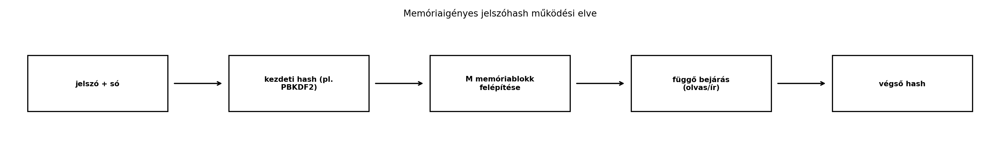

A Jelszótárolás: só, PBKDF2 és bcrypt alfejezetben megismertük a jelszó-hash alapötletét: a jelszót egy sóval kevert, lassú, iterált függvénnyel hasheljük, hogy a támadó tömeges próbálkozását időben drágítsuk. A PBKDF2-höz hasonló függvények azonban alapvetően időigényesek: minden próbálkozáshoz adott számú egyszerű hashműveletet kell elvégezni, memóriát viszont alig használnak.
Ez a tulajdonság a támadónak kedvez. Egy támadó nem általános célú CPU-t használ, hanem erre a célra épített hardvert: GPU-kat, FPGA-kat vagy ASIC-eket. Egy modern GPU több ezer magján egyszerre futtathat PBKDF2-próbálkozásokat, mert mindegyik kis állapotú, szinte memória nélküli számítás. Ha a szerveren a hash 1 másodpercig fut, a támadó 1000 párhuzamos maggal ugyanannyi idő alatt közel 1000 jelszót próbálhat ki. Az időigényességet tehát a párhuzamosítással ki lehet játszani. A memóriaigényesség célja, hogy ezt a párhuzamosítási előnyt radikálisan lecsökkentse: a támadónak is minden egyes próbálkozáshoz nagy memóriát kell tartania, ami a modern hardvereken szűk erőforrás.
Vegyünk egy példát. A szerveren az Argon2id konfigurációval egy jelszó-hash 0,5 másodpercig fut, és 64 MiB memóriát igényel. A támadó GPU-ján van 16 GiB memória, és a memóriasávszélesség erősen korlátozott: a GPU akkor tud gyorsan számolni, ha az adatok a kis gyorsítótárban vannak. A 64 MiB-os munkakészlet viszont nem fér a gyorsítótárba, tehát minden hash a lassú, nagy késleltetésű memóriából olvas. Ráadásul a párhuzamos feldolgozást korlátozza, hogy a 16 GiB-ból egyszerre csak próbálkozás fér el. A támadó tehát nem tud ezerszeres párhuzamosítást elérni ugyanazon a hardveren, csak ha további memóriát vásárol – ez pedig drága, és a memória magas ára radikálisan növeli a támadás költségét. A következő folyamatábra a memóriaigényes hash általános működését mutatja:

Az ábra lényege: a középső két lépés mérete és hozzáférési mintája határozza meg, mennyire nehéz a támadónak a memóriát csökkenteni.
Definíció. Egy jelszó-hash függvényt memóriaigényesnek (memory-hard) nevezünk, ha a kiértékeléséhez a paraméterek által szabályozott, a bemenettől függetlenül is nagy mennyiségű memória szükséges, és a memória csökkentésekor a szükséges idő (vagy más erőforrás) rendkívül gyorsan nő. Ezt a jelenséget idő–memória kompromisszumnak hívjuk: ha a támadó a memóriát az előírt értéknek mondjuk a felére csökkenti, nem egyszerűen kétszer olyan lassabb lesz, hanem a függvény tervezésétől függően akár másodfokúan vagy még nagyobb mértékben növekszik a szükséges számítási idő.
A memóriaigényesség nem azt jelenti, hogy a memória teljes elhagyásával nem lehet kiszámítani a hash-t – elvileg mindig újra lehet számolni a kihagyott értékeket –, hanem azt, hogy az újraszámítás munkaigénye olyan nagy, hogy a támadó a memóriát jobban megéri megvenni. A cél tehát: a támadó költsége a memóriában és az időben egyszerre nőjön, és ne legyen olcsó átváltás.
A scrypt (ejtsd: „eszkript”) az egyik első széles körben használt memóriaigényes jelszó-hash függvény. Colin Percival tervezte a Tarsnap mentési szolgáltatáshoz (2009; ellenőrizendő), kifejezetten az akkori hardverekkel szembeni védelemre. A scrypt három paramétert használ:
N: CPU/memória költség paraméter, mindig 2 hatványa; a
memória mérete arányos N-nel.r: blokkméret-paraméter; egy belső blokk
bájt (a szokásos
mellett 1 KiB).p: párhuzamosítási paraméter.A scrypt először a jelszót és a sót PBKDF2-vel előhasheli, majd a
ROMix nevű lépésben felépít egy nagy, r-től is
függő méretű memória-vektor tömböt: a szükséges memória körülbelül
bájt. Ezután egy függő bejárással keveri a tömböt, amelynél az egyik
memóriacím értéke befolyásolja a következő címet. Végül ismét PBKDF2-vel
állítja elő a végső kulcsot.
A scrypt tervezési célja az volt, hogy az N és
r növelésével a támadónak minden próbálkozásnál nagy
memóriát kelljen tartania. A gyakorlatban azonban a scrypt ideális
memóriaigényessége a támadó által használható gyorsítótár méretétől és a
memóriasávszélességtől függ; ha az r érték kicsi, a támadó
a memóriát nem teljesen használhatja ki, ezért az r-t sem
szabad lerövidíteni. A scrypt ma is használható, de az Argon2
tervezésénél már figyelembe vették a scrypt gyengeségeit, ezért az új
fejlesztéseknél az Argon2id ajánlott.
Az Argon2 a 2015-ös Password Hashing Competition győztese. Három változata van, amelyek a memória hozzáférési mintájában különböznek:
Az Argon2 paraméterei:
t: iterációk száma (időköltség).m: memóriaigény KiB-ban (pl. 64 MiB = 65536 KiB).p: párhuzamossági fok.s: só hossza (ajánlott legalább 16 bájt).T: kimenethossz bitben vagy bájtban.Az RFC 9106 két ajánlott beállítást ad (ellenőrizendő; az ajánlások időben változhatnak):
t=1, p=4, m=2 GiB,
ha a memória rendelkezésre áll;t=3, p=4, m=64 MiB,
ha jóval kevesebb memória van.Az OWASP Password Storage Cheat Sheet ennél kisebb, webes bejelentkezésre szabott minimumokat is közöl (ellenőrizendő).
Példa 1: scrypt memóriaigényének kiszámítása. Ha
N = 2^14 = 16384, r = 8, p = 1,
akkor a scrypt által használt memória körülbelül
bájt, azaz pontosan 16 MiB. Ha N-et megduplázzuk
-re,
a memória 32 MiB lesz; a függvény futási ideje a gyakorlatban közel
kétszeresére nő, de a támadónak az idő–memória kompromisszum szerint a
memória felezésekor ennél drasztikusabban nőhet az újraszámítási
ideje.
Példa 2: Argon2id paraméterek és kimenet. Tegyük
fel, hogy a jelszó "correct horse battery staple", a só 16
véletlen bájt, és az Argon2id paraméterek t=3,
m=65536 (64 MiB), p=4. Az Argon2id belül
felépít egy 64 MiB-os memória-állapotot, 3 iterációs passzban keveri, és
a kimenet például 32 bájt (256 bit) levezetett kulcs. Kézzel nem
számoljuk végig a hash-t, de a futásidő a hardvertől függően a
tizedmásodperctől a másodpercig terjedhet; mérni kell. A kimenetet a
lenti Python-illusztráció szemlélteti (a cryptography
Argon2id osztályával; az argon2-cffi
alternatíva).
A jelszó-hash paramétereit mindig a saját rendszerünkön kell mérni. A cél, hogy a hash a valós szerveren ne tartson túl sokáig, mert az lassítja a bejelentkezést, és kitettséget jelenthet a szolgáltatás DoS-támadására, de a támadó számára a lehető legdrágább legyen. A mérés lépései:
t=3, m=64 MiB, p=4.argon2-cffi
hash függvényt.m-et vagy t-t; ha túl
gyors, növeljük.p párhuzamosságot is a
rendelkezésre álló CPU-magokhoz igazítsuk; ha a szerveren csak 2 mag
van, a p=4 nem ad több memóriát (azt az m
adja), csak lassítja a szervert, így ugyanazon időkeretbe kisebb
t fér bele.A mérés szemléltetésére tegyük fel, hogy a szerveren az Argon2id
m=64 MiB, t=3, p=4 konfiguráció
0,8 másodpercet vesz igénybe. A támadó GPU-jának memóriasávszélessége
korlátozott: ha 1000 párhuzamos próbálkozást akar futtatni, 64 GiB
memóriára van szüksége. Egy 16 GiB-os GPU-n tehát legfeljebb 256
próbálkozás fut egyszerre, és mindegyik a nagy késleltetésű memóriából
dolgozik. A támadás így másodpercenként nagyságrendileg kevesebb
próbálkozást tud végrehajtani, mint egy hagyományos PBKDF2 ellen, ahol a
1000 párhuzamos mag teljesen kitölti a számítási kapacitást.
Továbbvitt eredmény. Az Argon2id-vel való kulcsszármaztatást használjuk a Jelszavas és kihívás–válasz hitelesítés alfejezetben a PAKE-protokollok offline brute-force elleni védelménél, és az 1. projekt: fájltitkosító eszköz AEAD-dal és jelszóból származtatott kulccsal záróprojektben a jelszóból származtatott AEAD-kulcs készítésére.
A cryptography csomag a scryptet közvetlenül támogatja;
Argon2id-höz az argon2-cffi könyvtár használható
opcionálisan (a cryptography 46.0.5-ös változata is
tartalmaz Argon2id osztályt a
cryptography.hazmat.primitives.kdf.argon2 modulban, helyben
ellenőrizve; tároláshoz a derive_phc_encoded és
verify_phc_encoded a
$argon2id$v=19$m=…,t=…,p=…$… formátumot adja). Az alábbi
kód a scryptet, majd az Argon2id-t mutatja be oktatási célból.
# OKTATÁSI CÉLRA – NEM ÉLES HASZNÁLATRA
from cryptography.hazmat.primitives.kdf.scrypt import Scrypt
import os
# A sót élesben a secrets vagy os.urandom szolgáltatja; itt gyors példa
so = os.urandom(16) # 16 bájt véletlen só
jelszo = b"hosszu jelszo, de csak teszt" # rögzített tesztvektor
kdf = Scrypt(
salt=so,
length=32, # 32 bájtos levezetett kulcs
n=2**14, # N: CPU/memória költség, 16384
r=8,
p=1,
)
kulcs = kdf.derive(jelszo)
print("Származtatott kulcs hossza:", len(kulcs), "bájt")
print("Első 8 bájt:", kulcs[:8].hex())Várt kimenet (a só véletlen, ezért a bájtok eltérnek, de a hossz állandó):
Származtatott kulcs hossza: 32 bájt
Első 8 bájt: <16 hexa jegy>Az Argon2id ugyanígy származtat kulcsot:
# OKTATÁSI CÉLRA – NEM ÉLES HASZNÁLATRA
from cryptography.hazmat.primitives.kdf.argon2 import Argon2id
from cryptography.exceptions import InvalidKey
import os
so = os.urandom(16)
jelszo = b"correct horse battery staple"
def kdf(): # minden derive/verify új példányt igényel
return Argon2id(salt=so, length=32, iterations=3, lanes=4, memory_cost=65536)
kulcs = kdf().derive(jelszo)
print("Argon2id kulcs hossza:", len(kulcs))
kdf().verify(jelszo, kulcs) # hibás jelszónál InvalidKey kivétel
print("Az ellenőrzés sikeres.")Várt kimenet (futtatva, cryptography 46.0.5):
Argon2id kulcs hossza: 32
Az ellenőrzés sikeres.A kód a levezetett kulcs hosszát ellenőrzi; a tényleges bájtok a só
véletlensége miatt nem ismételhetők meg pontosan. A so-t a
jelszó mellett a támadó ismerheti, ezért a biztonság a függvény
memóriaigényességéből és a jelszó entrópiájából fakad, nem a só
titkosságából.
Recept: Argon2id konfiguráció adott szerverkorláthoz. Kövessük az alábbi lépéseket:
m-et például 64 MiB-ra (azaz
memory_cost=65536 KiB), ha 256 MiB-nál több RAM nem áll
rendelkezésre.p-t a CPU-magok számához; tipikus érték
p=4.t iterációszámot: kezdjük
t=3-mal.argon2-cffi vagy más jól auditált könyvtárral.m-et
vagy t-t, amíg el nem éri a kívánt késleltetést. Ha túl
lassú, csökkentsük t-t, ne pedig m-et, mert a
memória a támadói költség fő tényezője.A LUKS2 (Linux Unified Key Setup, 2. verzió) a Linux lemeztitkosítás
elterjedt formátuma. A LUKS2 a lemez jelszavából történő
kulcsszármaztatáshoz alapértelmezés szerint Argon2id-t használ, amikor
cryptsetup parancsot adunk ki. A LUKS2 fejlécében a
rendszergazda beállíthatja az Argon2 paramétereit, például
--pbkdf argon2id --pbkdf-memory 1048576 (1 GiB) és
--pbkdf-force-iterations 4. Ennek célja, hogy a lemez
offline brute-force támadása – amikor a támadó lemásolja a titkosított
lemezt, és tetszőleges számban próbálgatja a jelszavakat – rendkívül
erőforrás-igényes legyen. Egy lemeztitkosításnál a hash időtartama 1–3
másodperc is lehet, hiszen a rendszerindításnál egyszer kell megadni a
jelszót, és a támadónak ugyanezt a memóriaigényes műveletet kell minden
próbálkozásnál elvégeznie.
A jelszókezelők, mint például a KeePassXC vagy a Bitwarden, szintén Argon2id-t használnak a mesterjelszóból származtatott kulcs előállítására. A támadó, aki megszerzi a jelszókezelő adatbázisát, a mesterjelszó kitalálásához a memóriaigényes hash-t kell futtatnia minden próbálkozásnál. A felhasználó által választott paraméter itt közvetlenül befolyásolja a támadás költségét; a szolgáltatók tipikusan 64 MiB-os vagy nagyobb memóriát állítanak be a kliensoldali hash-hez.
Túl alacsony memória és iterációszám.
m=8 MiB, t=1, p=2 Argon2id beállítással szinte elvész a
memóriaigényesség előnye; a támadó GPU-n gyorsan törheti a jelszavakat.
A helyes gyakorlat a lehető legnagyobb memória, amit a szerver
kényelmesen elbír.
Argon2d használata osztott környezetben. Az adatfüggő címzés oldalcsatornát nyithat, ha a támadó ugyanazon a gépen mérheti a cache-időzítéseket. Ha a hash-t felhőben, más bérlőkkel közös hardveren futtatjuk, Argon2id-t vagy Argon2i-t válasszunk.
A p paraméter összekeverése a
memóriával. A p a párhuzamos feldolgozási szálak
számát adja meg, nem a memória méretét; a memóriát az m
határozza meg. Ha valaki a védelem növelésére csak a p-t
emeli, a memóriaigény nem nő, és a támadó ASIC-je ugyanakkora memóriával
több próbálkozást futtathat.
A jelszó-hash kimenetének félreértése. A
levezetett hash nem maga a titkos kulcs; ha 256 bites kulcsot
szeretnénk, a length paraméterrel 32 bájtot kérjünk, és a
kimenetet csak a kívánt kriptográfiai célra használjuk. Ne tároljuk a
hash-t úgy, mintha az jelszó lenne; a hash ellenőrzéséhez újra kell
futtatni a függvényt, és a kimenetet konstans időben
összehasonlítani.
DoS-támadás lehetősége a nagy memória miatt. Ha a hitelesítési végpont több ezer egyidejű kérést kap, és mindegyik 1 GiB memóriát igényel, a szolgáltatás könnyen kimerül. A paramétereket a valós egyidejű terhelésre kell méretezni, és szükség esetén korlátozni a bejelentkezési kísérleteket.
t=3, m=65536,
p=4. Mit jelent a m=65536?N paraméterét megduplázzuk, a
memóriaigény is megduplázódik?A válaszok a Megoldások szakasz „Önellenőrzés – válaszok” részében találhatók.
1. feladat (A). Magyarázza el saját szavaival az idő–memória kompromisszum fogalmát. Miért növeli a támadó költségét, ha a memóriaigényes hash memória méretét csökkenti?
2. feladat (A). Számítsa ki, mennyi memóriát használ
a scrypt N=2^12, r=8, p=1
paraméterekkel! Ha N=2^15, r=8 lenne, mekkora
lenne a memória?
3. feladat (B). Egy webalkalmazás szerverén a
hitelesítés hash-idejére 1 másodperc áll rendelkezésre, a rendelkezésre
álló memória 512 MiB, a CPU 4 magos. Válasszon Argon2id paramétereket
(t, m, p), indokolja a
választást, és írja le, hogyan mérné meg a tényleges futási időt!
4. feladat (B). Írjon Python-kódot (oktatási célra)
az argon2-cffi könyvtár használatával, amely Argon2id-vel
hash-t készít egy tesztjelszóhoz t=3, m=65536,
p=4 paraméterekkel, 16 bájt sóval, és a hash-t ellenőrzi! A
kód ne legyen futtatva, de a várható kimenetet írja le.
5. feladat (C). Elméleti indoklás: Miért nehéz a memóriaigényes hash-t GPU-n gyorsítani, ha a memória-hozzáférési minta adatfüggő? Hasonlítsa össze az Argon2d és Argon2i viselkedését ebből a szempontból.
6. feladat (D). Egy fejlesztő az alábbi
paramétereket használja: Argon2id, t=1,
m=16384 (16 MiB), p=2. Miért gyenge ez a
beállítás? Hogyan javítaná, ha a szerver 1 másodpercet és 1 GiB memóriát
enged? Készítse elő azt is, hogy az így származtatott kulcsot hogyan
használná egy AEAD fájltitkosítóban.
A megoldások a Megoldások szakaszban találhatók.
m paraméter a memóriaigényt adja meg KiB-ban;
m=65536 tehát 64 MiB.N-nel, tehát
N duplázásakor a memória kb. megduplázódik.Az idő–memória kompromisszum azt jelenti, hogy a memóriaigényes függvény memóriaigényének csökkentése az időigény növekedését vonja maga után, gyakran nem lineárisan. Ha a támadó a szükséges memóriát a felére csökkenti, a kihagyott adatokat újra kell számolnia, ami lényegesen több időt igényel. Ezzel a támadó nem tudja olcsón feláldozni a memóriát a sebességért, így a teljes támadási költség magas marad.
A memória képlete
bájt. N=2^12=4096, r=8 esetén:
bájt = 4 MiB. N=2^15=32768, r=8 esetén:
bájt = 32 MiB.
A 512 MiB-os memória mellett válaszhatunk m=65536 (64
MiB), mert ez jó egyensúly a védelem és a szerver memóriája között. A
p=4 illeszkedik a 4 magos CPU-hoz. A t=3
kezdeti érték, majd mérni kell az argon2-cffi hash
futásidejét. Ha az 1 másodperc alatt van, növelhetjük m-et
128 MiB-ra (m=131072) vagy t-t 4-re. A mérést
a tényleges környezetben kell végezni, a végső paramétereket
dokumentálni.
# OKTATÁSI CÉLRA – NEM ÉLES HASZNÁLATRA
from argon2 import PasswordHasher
from argon2.exceptions import VerifyMismatchError
from argon2.low_level import Type
# Teszt jelszó; a só hosszát (salt_len) és a sót a PasswordHasher maga kezeli
jelszo = "correct horse battery staple"
# Argon2id hash készítése
ph = PasswordHasher(
time_cost=3,
memory_cost=65536, # 64 MiB KiB-ban
parallelism=4,
type=Type.ID,
salt_len=16,
)
hash_ = ph.hash(jelszo)
print("Tárolt hash:", hash_)
# Ellenőrzés
try:
ph.verify(hash_, jelszo)
print("A jelszó helyes.")
except VerifyMismatchError:
print("A jelszó hibás.")Várt kimenet: a tárolt hash egy
$argon2id$v=19$m=65536,t=3,p=4$... formátumú sztring, és a
kimenet: A jelszó helyes. A pontos hash a véletlen só miatt
változik.
Ha a memória-hozzáférési minta adatfüggő (Argon2d), a következő olvasandó cím az éppen feldolgozott adattól függ, ezért a támadó nem tudja előre betölteni a szükséges adatokat a gyorsítótárba. A GPU-n ez nagy memória-késleltetést okoz, és a párhuzamos magok nem tudnak hatékonyan dolgozni, mert mindegyik a lassú globális memóriából vár. Az adatfüggetlen mintázat (Argon2i) viszont előre ismert, ezért a támadó optimalizálhatja a memória-hozzáférést, például előre betöltheti a következő blokkot. Ugyanakkor az adatfüggő változat cache-időzítéses oldalcsatornával sebezhető, ha a támadó ugyanazon a gépen mérhet; ezért az Argon2id hibrid megoldást ad: az első fázis adatfüggetlen véd az oldalcsatornától, a második adatfüggő fázis pedig a GPU-támadást drágítja.
A t=1, m=16384 (16 MiB), p=2
beállítás túl gyenge: a memória kicsi, a támadó GPU-ja sok párhuzamos
próbálkozást futtathat, és az iterációk alacsony száma kevés időbeli
költséget ad. Ha a szerver 1 másodpercet és 1 GiB memóriát enged,
válasszunk Argon2id m=262144 (256 MiB) vagy akár
m=524288 (512 MiB) beállítást, t=3 vagy
t=4, p-t a CPU-magokhoz igazítva (pl.
p=4), majd mérjünk. Az így származtatott 32 bájtos kulcsot
egy AEAD-konstrukcióban (például AESGCM vagy ChaCha20Poly1305)
használjuk a fájl titkosítására; a hash paramétereit és a sót a
titkosított fájl fejlécében tároljuk, hogy a visszafejtéskor ugyanazt a
kulcsot kapjuk. Ez a feladat előkészíti az 1.
projekt: fájltitkosító eszköz AEAD-dal és jelszóból származtatott
kulccsal projektet, és a Jelszavas és
kihívás–válasz hitelesítés PAKE-protokollok hasonló védelmét.
A hagyományos időigényes jelszó-hash függvények (mint a PBKDF2)
párhuzamosan könnyen gyorsíthatók GPU/ASIC-hardveren. A memóriaigényes
függvények ezt a támadást drágítják azzal, hogy minden hash nagy,
állapotot tartó memóriát igényel, és a memória csökkentése idő–memória
kompromisszum révén aránytalanul megnöveli a számítási időt. A scrypt az
egyik első ilyen függvény, paraméterei N, r,
p. Az Argon2 a modern ajánlás; változatai Argon2d
(adatfüggő), Argon2i (adatfüggetlen) és Argon2id (hibrid). Új
rendszerekhez az RFC 9106 az Argon2id-t javasolja, például
t=3, m=64 MiB, p=4 paraméterekkel
(az ajánlások ellenőrzendők, időben változhatnak). A paramétereket a
szerver valós korlátaihoz kell mérni: a hash ideje ne legyen túl hosszú,
de a memória minél nagyobb legyen. Tipikus hibák a túl alacsony memória,
az Argon2d oldalcsatornás környezetben, a p és
m szerepének összekeverése, valamint a DoS-támadás
kockázatának figyelmen kívül hagyása. Továbbvitt
eredmény. Az Argon2id-vel való kulcsszármaztatást használjuk a
Jelszavas és kihívás–válasz hitelesítés
alfejezetben a PAKE-protokollok offline brute-force elleni védelménél,
és az 1. projekt: fájltitkosító eszköz AEAD-dal és
jelszóból származtatott kulccsal záróprojektben.
t, m, p értékek az RFC-ben
szereplő ajánlások, de a számok és a hivatkozott forrás ellenőrzendők; a
szabványok frissülhetnek.cryptography (pyca) dokumentáció a Scrypt API-hoz: a
kódban használt paraméternevek és megszorítások (például n
2 hatványa) a könyvtár adott verziójában érvényesek; ellenőrzendő a
frissítésekkor.cryptsetup
dokumentációjában található; a pontos paraméternevek és alapértelmezések
verziófüggők.PasswordHasher, Type.ID) a csomag
dokumentációjából származnak, és a csomag frissítésekor
változhatnak.